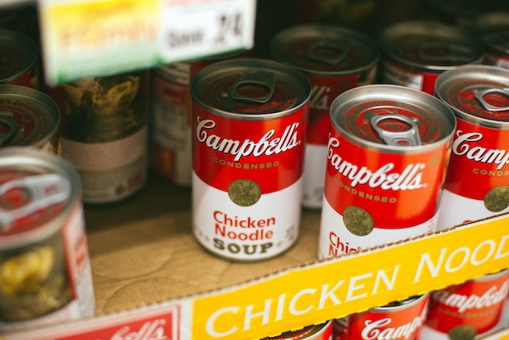

World's Best Chicken Noodle Soup

Description
Instructions for hearty, yummy chicken noodle soup
Ingredients
- 1 tablespoon olive or vegetable oil
- 2 cloves garlic, finely chopped
- 8 medium green onions, sliced (1/2 cup)
- 2 medium carrots, chopped (1 cup)
- 2 cups cubed cooked chicken
- 2 cups uncooked egg noodles (4 oz)
- 1 tablespoon chopped fresh parsley or 1 teaspoon parsley flakes
- 1/4 teaspoon pepper
- 1 dried bay leaf
- 6 cups Progresso™ chicken broth (from two 32-oz cartons)
Instructions
- In 3-quart saucepan, heat oil over medium heat.
Add garlic, onions and carrots; cook 4 minutes, stirring occasionally.
- Stir in remaining ingredients. Heat to boiling; reduce heat. Cover; simmer about 10 minutes,
stirring occasionally, until carrots and noodles are tender. Remove bay leaf.
Source
Recipe source
Home